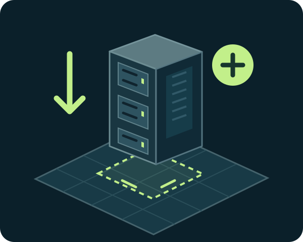
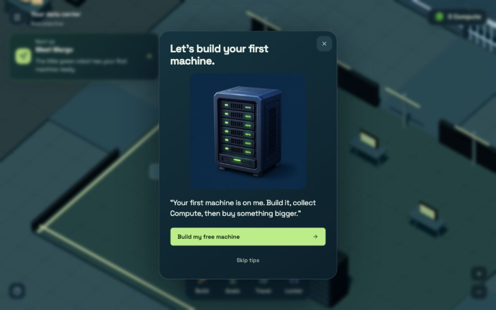
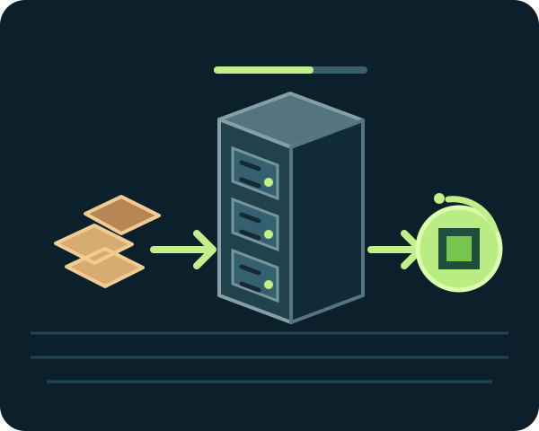
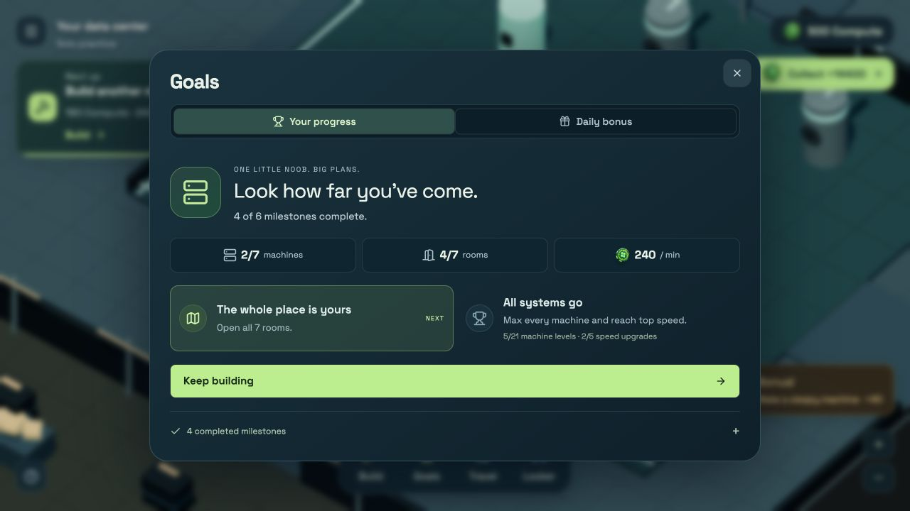
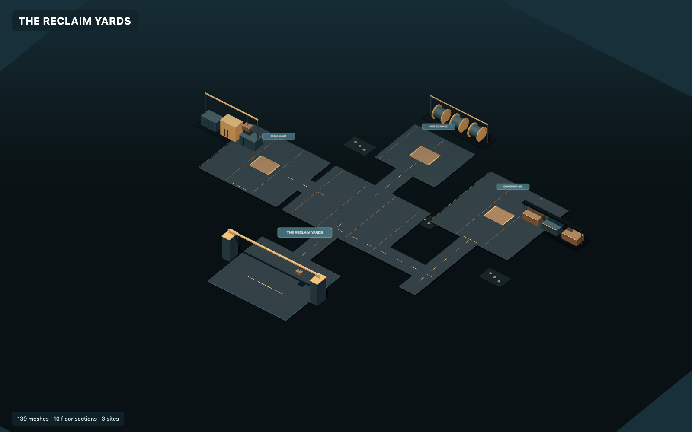
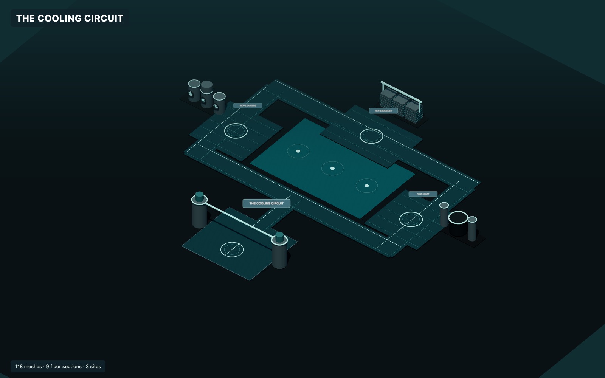
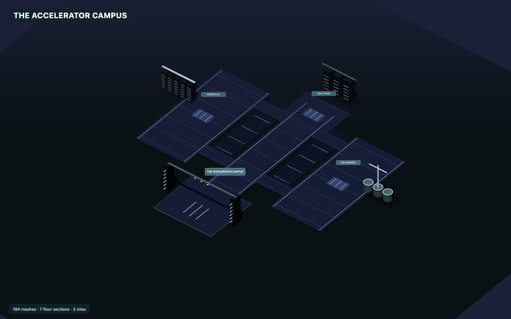
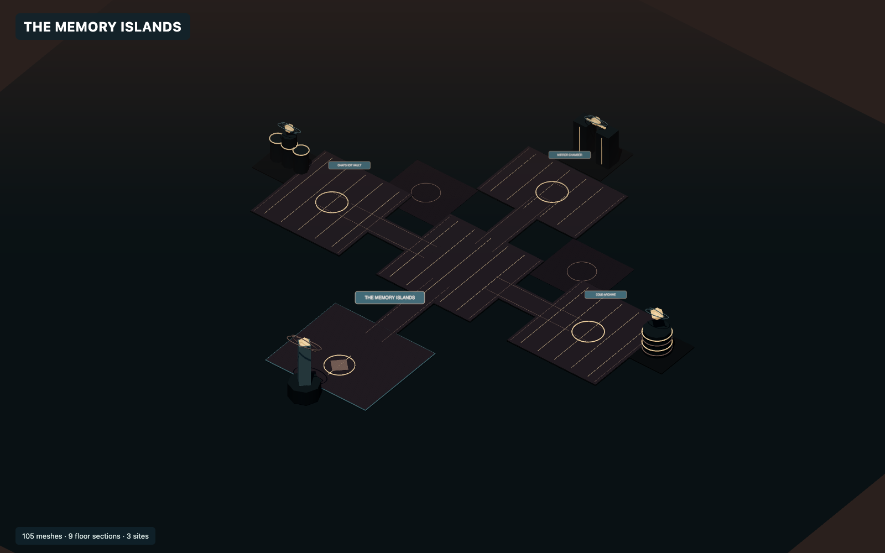
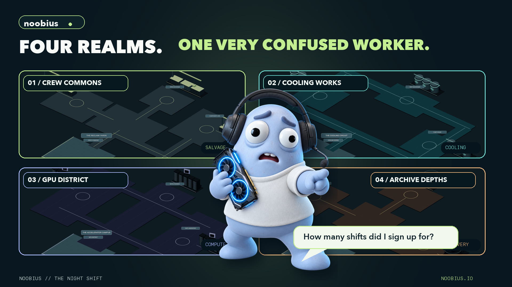

BUILD
Your first machine is free
Margo points you toward your center. Place the starter rack on its pad; no Compute or parts are needed for that first one.
This is the owner’s walkthrough of Noobius: what a player actually does, how the two currencies differ, why levels matter, and where other people enter the picture.
The 1,000-token progression and 24-hour seller rules are implemented in this branch. The public production game still runs an older build; the real $NOOBIUS mint has not launched. Existing devnet staging uses valueless test assets and must be redeployed and rechecked before this exact version can be played there.
Noobius owns a small data center. You turn recovered parts and your machine capacity into completed work. The game rewards choosing what to build, supply, repair and deliver. You then use Compute to improve your center or trade with other players. Skills and worlds give that work a longer arc.

The core is a playable world, your private center, and shared work with other players.
Compute is the in-game resource you earn and spend on your center. $NOOBIUS will be a Solana token held in your wallet. Holding it will grant access; it does not automatically turn into Compute or give XP.

Margo points you toward your center. Place the starter rack on its pad; no Compute or parts are needed for that first one.

Recover supplies, choose a machine batch, and load it. When it finishes, collect its one promised reward.
A supported Solana wallet signs a login message; signing in alone does not spend tokens or SOL. Browser-only practice still exists in the current build and remains separate from wallet progress. The owner intends to retire that option later, after a migration decision.
Click or tap the floor to move. Press E near an object on desktop or tap the object. Margo can mark a destination, but she does not automatically complete a task.
Salvage parts in the world or make needed parts in the Workshop. Choose a batch at a rack, inspect its cost and output, and commit it. The timer represents work you already supplied. It will finish if you leave, but it will not start another batch while idle.
Claim the completed Compute. Spend it on a speed boost, stronger rack or new room; save it for a different build; or take a client order. A completed job pays once. Repeated clicking cannot claim it twice.
Open Travel to visit a worksite, plaza or another player’s center. Each realm has a distinct diagnostic and materials. The first two realms are available through earned levels; later ones also use verified token access.
The important design change is that time alone is not a printing press. The player must supply a batch, complete a job or take another meaningful action. Work may finish in the background, but a finished rack stops until the player chooses another run.
Recover or buy inputs, choose a batch, run it, then collect. A machine does not endlessly repeat the batch.
Compare customers, assign a machine and supplies, then deliver. Shared demand limits each account to 12 bookings and up to 4,000 Compute in client payments per rolling 24 hours.
Diagnose broken systems, salvage, solve realm workstations, craft and join cluster projects. These require interaction and have their own costs and rewards.

Compute can buy buildings, speed and capacity upgrades, rooms, materials and some player-listed items. It does not leave the game simply because your wallet disconnects. The separate Solana token is only spent when you explicitly approve a token purchase in your wallet.
Yes, once you have chosen and supplied work. A timer can finish while you walk elsewhere or close the page. Nothing in the new batch system automatically queues a second run. A player cannot create an endless factory by leaving one tab open.
Some server-side limits and action validation exist, but multiple wallets cannot be perfectly identified as one human. This remains an abuse and economy-design risk before any real-value launch. The game should be assessed by what actions cost, how often they can repeat and what value they create.
Work gives skill XP. Each skill has its own level. Your total player level is the average of the five skill levels, rounded down. Token ownership never grants XP or skips the work. Existing account XP migrates into a starting point for all five tracks, so old saves do not lose their earned level.
Salvaging 10, Engineering 10, Production 9, Operations 8 and Fieldwork 8 average to 9. Your total level is 9. Training one favorite skill alone is possible, but balanced work raises total level more reliably.
| Skill | Typical work that trains it | Why it exists |
|---|---|---|
| Salvaging | Recovering usable parts | Turns exploration into materials. |
| Engineering | Building, crafting, repairing and collection | Makes a better center and reliable equipment. |
| Production | Collecting completed Compute work | Rewards supplied, finished production. |
| Operations | Running shifts and most center operations | Measures the day-to-day business. |
| Fieldwork | Realm activities and recoveries | Rewards work away from home. |
The game checks whether the connected Solana account holds at least 1,000 whole $NOOBIUS tokens under the configured mint and network. The check does not move them. A holder can keep earning levels past 10 and enter GPU District and Archive Depths once the ordinary level requirement is met. A player may buy from other players without holding 1,000.
The current server records when it first verifies an eligible balance and resets the clock when it observes a lower balance. It does not yet prove every moment of an uninterrupted 24-hour hold. Continuous-history verification or a monitored balance history is still required before presenting that claim as a production-grade real-token guarantee.
Your center is your base. Travel takes you into realm work areas and shared spaces. Level requirements are earned through skills; token holder requirements are additional access checks for the last two realms. You do not have to buy an Operator license to enter.

Salvage working hardware, sort scrap and learn the basic repair loop. This is the social starting area and shared plaza.

Route coolant and recover supplies from the pipe network. It introduces a new environmental diagnostic.

Qualify chips and schedule busy machines. Entry needs level 5 plus verified 1,000-token access.

Reconnect archive islands and recover boards and data cores. Entry needs level 8 plus verified 1,000-token access.
These 1600 × 1000 realm images are source-rendered design captures. The running game adds Noobius, other players and interaction markers.
Already paid or committed work stays attached to your save and can be completed or recovered. New entry to holder spaces and new selling are checked against current eligibility. The server keeps a brief read-only grace for a temporary verification outage, but a failed RPC does not authorize a fresh sale.
Each wallet account has its own saved center. Neighborhoods currently hold up to five players. You can meet in a shared area, see other Noobius characters move, chat, visit their centers and work on a cluster project. A visitor can observe but cannot build, take items or spend the owner’s Compute.
Place and upgrade machines, schedule work, choose jobs and personalize your Noobius. Other players can visit without gaining these controls.
Meet in the plaza, see movement and chat, compare progress, help with clusters, and trade through the marketplace.

Room presence is live over the room service; saved balances, purchases and progress live in the game database. If someone disconnects, their durable center remains. Five-player stability has been tested; thousands of simultaneous players have not been proven.
A seller lists a quantity of parts at a Compute price. The items are reserved until sold or cancelled. The buyer pays game Compute; there is no token wallet transaction for the item purchase.
A seller lists earned Compute at their chosen $NOOBIUS price. A buyer reviews a wallet transaction, pays the token on Solana, and receives the reserved Compute after settlement. There is no fixed price or guaranteed buyer.
Buying only needs the appropriate connected wallet, balance and a valid offer. Creating a listing requires ordinary in-game trade qualification plus a verified 1,000-token holding whose 24-hour clock has matured. Losing eligibility stops new listing creation. Cancelling your own offer and checking an already-started purchase remain available.
Staging checkout uses a separate devnet game database and valueless devnet SOL/test tokens. A successful test trade there does not mean that the public game is paying real $NOOBIUS or that the launch mint has been configured. Wallet prompts must always be read carefully; the game cannot silently sign or spend from a user’s wallet.
For a connected account, the wallet’s public Solana address identifies the saved player record. The Cloudflare D1 game database holds the name, center state, balances, five skill XP values, inventories, jobs and other durable game data. The wallet keeps tokens and transaction authority. The game does not store private keys or seed phrases.
No. Each public address is a distinct game identity and save unless a future account-linking feature is deliberately built. This also means multiple-wallet farming remains an abuse concern for any token economy.
This page is a manual for understanding the game design and source implementation. It is not a promise of earnings, a live token release announcement, or proof that the game is ready for unlimited public traffic.
| If you want to… | Go to… | What happens |
|---|---|---|
| Earn a first Compute payout | Center → starter rack | Recover inputs, start a batch and collect it once. |
| Find something active to do | Clients or realm worksite | Take a bounded client order or a hands-on diagnostic. |
| Grow your business | Center → build/upgrade/expand | Spend Compute for capacity, speed or room space. |
| Level up | Play across five work types | Skill levels average into total player level. |
| See a friend | Crew / Travel | Join a neighborhood, meet in a plaza or visit a center. |
| Trade parts | Shop → player offers | Buy with Compute; qualified holders can list. |
| Sell Compute | Exchange | Qualified 24-hour holders set a token price. |
Play the work to earn skills and Compute; use Compute to build, and hold the future $NOOBIUS token for higher levels, later realms and—after the verified hold period—selling access.